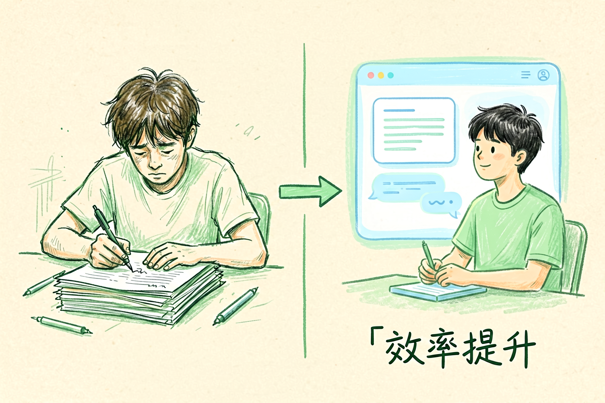

AI学习工具推荐：笔记、写作、语言学习五款工具全覆盖指南
学习太累想用AI辅助笔记整理、论文写作、语言学习、考试复习都能提效。本文精选五款工具，帮你找到最适合的学习伙伴。
AI学习工具是本文的核心主题，下面详细介绍如何使用。
AI学习工具：为什么需要AI辅助

传统学习方式效率低下，笔记整理耗时、论文写作困难、语言学习枯燥。AI学习工具通过智能算法，帮助用户快速整理笔记、生成论文草稿、练习语言对话，大幅提升学习效率和兴趣。新手使用AI学习工具前，先理解它的定位。
AI学习工具不是替代学习，而是辅助学习。它的价值在于处理重复性工作，让用户专注于深度思考。理解这一点，才能合理使用AI学习工具，而不是依赖它完成所有学习任务。
AI学习工具：五款工具功能对比

AI学习工具推荐五款主流工具：NotebookLM用于笔记整理，Kimi用于文档分析，ChatGPT用于写作辅助，DeepSeek用于多轮对话，Notion AI用于知识管理。每款工具各有侧重，用户可根据需求选择。
笔记整理选NotebookLM，文档分析选Kimi，写作辅助选ChatGPT，多轮对话选DeepSeek，知识管理选Notion AI。不要一次性使用太多工具，选择一个最需要的开始，熟悉后再扩展。参考NotebookLM新手入门，了解笔记整理的具体方法。
| 工具 | 核心功能 | 价格 | 适用场景 |
|---|---|---|---|
| NotebookLM | 笔记整理 | 免费 | 知识管理 |
| Kimi | 文档分析 | 免费/订阅 | 长文处理 |
| ChatGPT | 写作辅助 | 免费/订阅 | 日常写作 |
| DeepSeek | 多轮对话 | 免费 | 编程学习 |
| Notion AI | 知识管理 | 订阅 | 团队协作 |
AI学习工具：笔记与论文应用

AI学习工具的核心应用是笔记整理和论文写作。笔记整理方面，上传课程笔记或阅读材料，AI自动生成结构化摘要，提取关键观点。论文写作方面，输入主题和大纲，AI生成初稿，用户修改完善。
参考Kimi使用教程，了解长文档处理技巧。结合AI写作辅助教程，掌握论文写作的AI辅助方法。工具使用后，必须人工审核，确保内容准确性和逻辑连贯性。
AI学习工具使用示例代码/配置：
角色：资深创作者
任务：生成高质量内容
输出：结构化文案
约束：使用中文，字数控制在500字以内AI学习工具：语言与考试应用

AI学习工具在语言学习和考试复习中也有广泛应用。语言学习方面，AI可以生成对话练习、纠正语法错误、解释词汇用法。考试复习方面，AI可以生成复习计划、总结知识点、预测考题。
语言学习参考DeepSeek使用教程中的对话技巧，考试复习参考AI工具导航中的学习工具推荐。使用AI学习工具时，记住它是辅助，不是替代。关键知识点仍需自己理解和记忆。
AI学习工具：选择建议
AI学习工具的选择要匹配个人需求。初学者从免费工具开始，熟悉后再考虑付费。不要同时使用太多工具，容易分散精力。建立自己的工具使用习惯，形成稳定工作流。
结合其他教程的使用心得，形成完整的学习支持体系。别让AI学习工具替代你的思考，它只是辅助，关键决策仍要自己把关。不要盲目依赖AI生成的答案，保持独立判断能力。
AI学习工具：选择建议与注意事项
AI学习工具的选择要匹配个人需求。初学者从免费工具开始，熟悉后再考虑付费。不要同时使用太多工具，容易分散精力。建立自己的工具使用习惯，形成稳定工作流。关键是要持续实践，把AI工具融入日常学习，才能真正提升效率。别让AI学习工具替代你的思考，它只是辅助，关键决策仍要自己把关。不要盲目依赖AI生成的答案，保持独立判断能力。 !尾图核心要点回顾
{kind=link}
本文信息核对于 2026-09-07。AI 产品的价格、免费额度与功能变动频繁，实际以各工具官网当前说明为准。